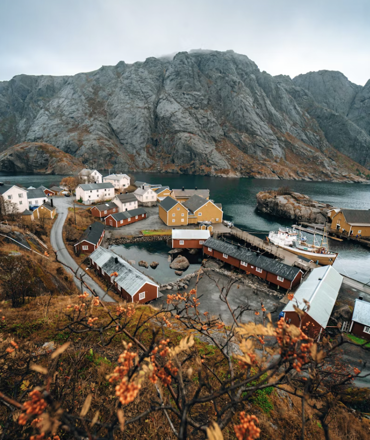
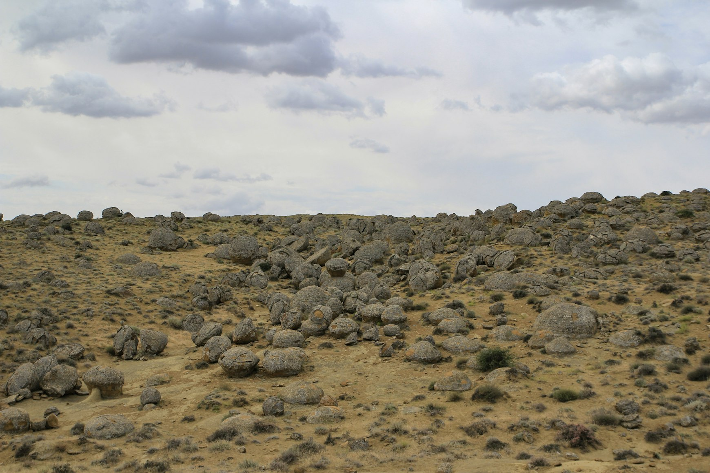

Churches rise from black cliffs using the same volcanic stone as the mountains behind them. Entire cities appear carved from ash-colored rock. Monasteries seem less constructed than fused into canyons, caves, and plateaus shaped by tectonic violence millions of years before Christianity arrived.
This is what makes Armenia architecturally unusual.
Not simply age.
Not religion.
Material.
The country sits on a volcanic highland where basalt, tuff, and dark lava stone have shaped architecture for centuries. In many places, the buildings do not contrast with the terrain the way European architecture often does.
They dissolve into it.
Yerevan: The City Built From Volcanic Light
At first glance, Yerevan does not look volcanic.
The city glows pink at sunset. Cafés spill into wide boulevards. Soviet avenues open toward views of Mount Ararat in the distance.
But nearly everything in central Yerevan is built from volcanic tuff.
The stone changes color depending on light: dusty rose in the evening, pale gold at noon, gray during winter rain. Entire apartment blocks, government buildings, staircases, and arches seem to absorb sunlight rather than reflect it.
Unlike concrete or polished marble, volcanic tuff carries softness and erosion visibly on its surface. Corners wear down. Texture deepens. Buildings age physically instead of remaining visually frozen.
Even modern Armenia often looks ancient because the stone itself already feels geological.

Geghard: Architecture Carved Into the Mountain
Nowhere explains Armenia’s volcanic architecture more clearly than Geghard Monastery.
Parts of the monastery are not constructed beside the mountain.
They are carved directly inside it.
The deeper chambers disappear into black volcanic rock where candlelight barely reaches the walls. Water drips slowly through the stone ceiling into medieval basins polished by centuries of hands. The air smells damp and mineral-heavy.
It becomes difficult to understand where architecture ends and geology begins.
This is one of the reasons architects find Armenia so fascinating.
Much of European religious architecture imposes itself onto the landscape.
Geghard feels excavated from it.
The monastery does not dominate the canyon.
It belongs to it.

Garni and the Basalt Geometry of the Canyon
Near Garni Temple, the landscape itself begins resembling architecture.
Below the pagan temple, the Garni Gorge is lined with enormous basalt columns formed by ancient lava flows. The formations rise vertically from the canyon walls in near-perfect hexagonal patterns, often called the “Symphony of Stones.”
From a distance, the cliffs resemble giant organ pipes or unfinished brutalist architecture.
The effect is strangely modern despite being entirely geological.
And this relationship between volcanic geometry and Armenian construction appears repeatedly throughout the country.
Sharp lines. Heavy stone. Dark surfaces. Minimal ornamentation.
Even medieval monasteries often feel unexpectedly contemporary because their forms mirror the brutal simplicity of the volcanic landscape itself.

Noravank and the Red Stone of Vayots Dzor
The road toward Noravank cuts through towering canyon walls saturated with volcanic iron and mineral color.
By sunset, the cliffs become almost unnaturally red.
The monastery sits at the end of the gorge beneath enormous rock faces that make the structure appear physically vulnerable against the scale of the landscape.
Unlike Gothic cathedrals in Europe designed to separate humanity from nature, Armenian monasteries often seem intentionally exposed to it.
Noravank does not rise above the canyon.
It survives inside it.
The volcanic stone used in the monastery shifts constantly with weather and light — orange, rust, black, dark rose. After rain, the surfaces deepen almost to blood-red.
The architecture feels alive because the geology around it remains visually active.
Gyumri and the Black Stone Cities
In Gyumri, volcanic architecture becomes urban.
Large parts of the city are built from dark basalt and black tuff extracted from nearby volcanic terrain. Streets feel visually heavier than most European cities because the stone absorbs light rather than reflecting it.
Old nineteenth-century buildings appear almost monochrome during cloudy weather. Ornamental details emerge slowly from shadow. Cracks from the devastating 1988 earthquake still remain visible across some facades.
Even silence behaves differently in Gyumri.
The dark stone softens sound.
The city feels colder. Slower. More permanent.
Architecturally, it creates an atmosphere closer to volcanic regions of Iceland or eastern Anatolia than to the polished historic centers of Europe.
Tatev and Architecture on the Edge of Collapse
Reaching Tatev Monastery means crossing one of the deepest gorges in the Caucasus.
The monastery stands above the Vorotan Canyon surrounded by volcanic mountains that often disappear behind fog and low cloud.
Here, Armenian architecture begins feeling almost defensive against geography itself.
Thick stone walls. Minimal openings. Low silhouettes resisting wind and isolation.
Nothing about Tatev feels decorative.
Everything feels built for endurance.
The monastery looks as though it has spent centuries resisting weather rather than attracting admiration.
And perhaps that is another reason architects study Armenia so closely.
The architecture here rarely prioritizes spectacle.
It prioritizes survival.
Sevanavank and the Volcanic North
At Sevanavank above Lake Sevan, black volcanic churches stand against cold water and pale mountain light.
In autumn, the landscape becomes almost monochromatic:
Dark stone.
Gray sky.
Silver water.
Bare volcanic hills.
The churches feel less constructed than anchored into the terrain itself.
Unlike Mediterranean architecture designed around openness and ornament, Armenian religious architecture often feels compact, weather-resistant, and inseparable from climate.
The buildings appear shaped by altitude, storms, and isolation as much as by theology.
Why Architects Keep Returning to Armenia
Armenia interests architects because it challenges many traditional ideas about architecture itself.
The country’s most powerful structures are rarely grand in the European sense.
They are heavy.
Minimal.
Volcanic.
Weathered.
Instead of separating human construction from nature, Armenian architecture often merges with geology so completely that the distinction almost disappears.
Monasteries emerge from cliffs. Cities absorb the color of volcanic plains. Churches resemble extensions of mountain ridges and canyon walls.
In Armenia, architecture does not simply sit on the landscape.
It feels born from it.